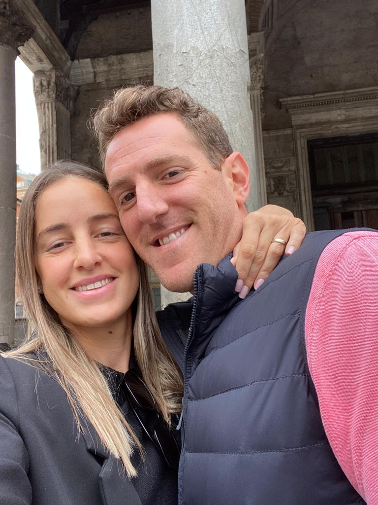
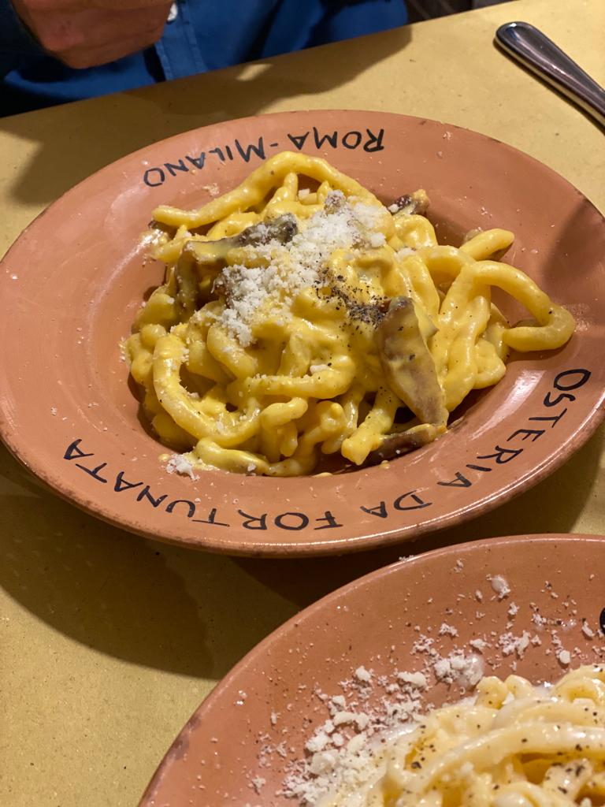

My favorite mini series that I recently watched on Netflix is 'The Playlist'
Link to watch on Netflix

This series talk about the music revolution, How the music became accessible on the internet from physical means such as CDs, records and more.
And of course about the establishment of 'Spotify'.
Link to Rome in Google-Maps
My last visit to Rome was last May with my husband- Amit.
My favorite food is Italian, so I celebrate in Rome.
in the picturs you can see the best pasta I ate in this visit- 'Carbonara Pasta', and me and my dear husband Amit

